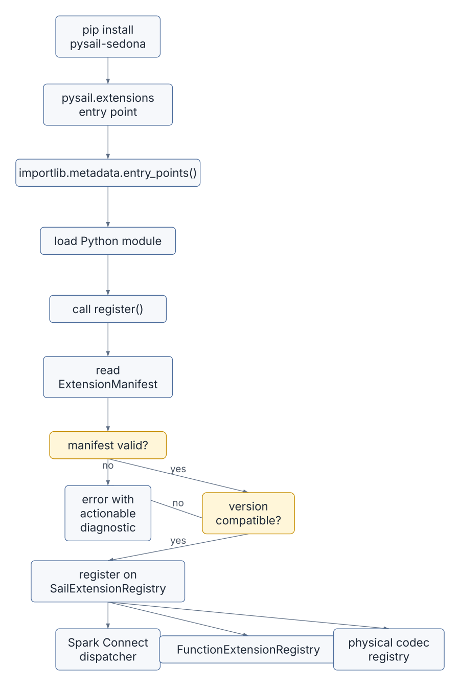
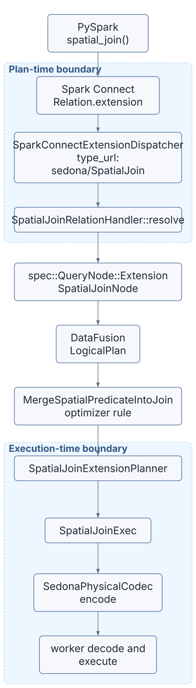
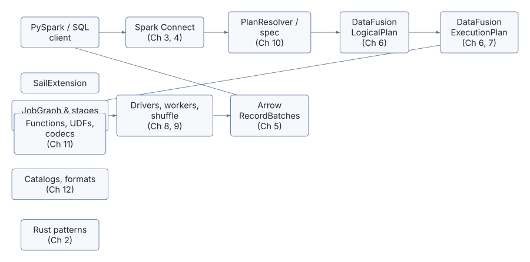

The first twelve chapters treated Sail as a system to read. This final chapter treats it as a system to extend.
The extension proposal in discussion #2001 is titled “Extension API for third-party DataFusion integrations (UDFs, optimizer rules, planner extensions).” It starts from a practical problem: integrating a real DataFusion extension, such as Apache SedonaDB, currently requires editing Sail internals across multiple crates. A useful extension does not only add one function. It may add scalar functions, aggregate functions, table functions, session configuration, logical optimizer rules, physical planner extensions, physical operators, and distributed codec behavior.
That is the key lesson of the whole book. In Sail, an extension is not a plugin point. It is a path through the query engine.
client API
-> Spark Connect request
-> Sail spec
-> plan resolver
-> DataFusion logical plan
-> analyzer and optimizer rules
-> physical planner extension
-> physical optimizer rules
-> distributed codec
-> worker session
-> Arrow batch executionIf an extension works only on the driver, it is not a distributed
extension. If it works only during planning, it is not an executable
extension. If it works only in a custom Rust binary, it does not solve
the pip install pysail pysail-sedona user experience that
the proposal calls out.
This chapter proposes an architecture for Sail extensions by assembling the patterns we have already seen.
The main files for this chapter are:
| Concern | File |
|---|---|
| Proposal touch point: session mutator | crates/sail-session/src/session_factory/server.rs |
| Proposal touch point: query planner chain | crates/sail-session/src/planner.rs |
| Proposal touch point: logical optimizer list | crates/sail-session/src/optimizer.rs |
| Proposal touch point: scalar and table function maps | crates/sail-plan/src/function/mod.rs |
| Proposal touch point: aggregate function map | crates/sail-plan/src/function/aggregate.rs |
| Proposal touch point: window function map | crates/sail-plan/src/function/window.rs |
| Proposal touch point: distributed physical codec | crates/sail-execution/src/codec.rs |
| Existing extension pattern: session extensions | crates/sail-common-datafusion/src/extension.rs |
| Existing extension pattern: table format registry | crates/sail-common-datafusion/src/datasource.rs |
| Existing extension pattern: format registration | crates/sail-session/src/formats.rs |
| Existing extension pattern: Python data source discovery | crates/sail-data-source/src/formats/python/discovery.rs |
| Existing extension pattern: Python table format | crates/sail-data-source/src/formats/python/table_format.rs |
| Existing extension pattern: lakehouse planners | crates/sail-plan-lakehouse/src/lib.rs |
| Existing extension pattern: physical plan nodes | crates/sail-physical-plan/src/ |
Discussion #2001 describes a third-party extension that needs all of these dimensions:
pysail users.SedonaDB is the motivating example. A spatial query may start as normal SQL:
SELECT *
FROM points p, polygons g
WHERE ST_Intersects(p.geom, g.geom)Without an extension-aware planner, this can look like a cross join plus a filter. With the right functions and optimizer rules, it can become a spatial join:
CrossJoin + ST_Intersects filter
-> logical optimizer rule
-> SpatialJoinPlanNode
-> extension physical planner
-> SpatialJoinExecThat single improvement needs more than one hook. The function
resolver must know ST_Intersects. The optimizer must know
the function is spatial and join-like. The physical planner must know
how to create SpatialJoinExec. The distributed codec must
know how to serialize and deserialize any extension physical plan that
reaches a worker.
The proposal’s important insight is that these hooks should be registered together. The extension author should not need to chase every hardcoded map and planner list in the Sail workspace.
The list above looks like one extension surface. It is actually two.
plan-time boundary execution-time boundary
client expresses intent operators run on Arrow batches
Sail resolves it workers re-resolve UDFs and plans
-> once per query -> once per batch
-> stability matters -> performance matters
-> performance does not -> version coupling tolerableThese two boundaries pull a stable plugin ABI in opposite directions.
The plan-time boundary wants forward and backward wire compatibility,
language neutrality, and a format that survives across years of Sail
releases. A user writing
SELECT ST_Intersects(p.geom, g.geom) should not care which
DataFusion version the server was built against, or whether their
extension was compiled with a different Rust toolchain than Sail
itself.
The execution-time boundary wants zero-copy access to Arrow buffers,
direct DataFusion ExecutionPlan integration, and native
function dispatch. It cannot afford a protobuf round trip per record
batch, and it has no realistic way to remain ABI-stable across major
DataFusion upgrades without recompilation.
Discussion #2001 implicitly conflates these. A unified
SailExtension trait is one way to register both, but the
mechanism for crossing each boundary can be different. The
recommended architecture in this chapter uses:
SailExtension object that registers
contributions to both.Some extensions only use one boundary. A library of ST_*
scalar functions that decomposes into existing DataFusion expressions
never needs execution-time integration. A custom physical operator like
SpatialJoinExec needs both, because workers must
reconstruct it from a wire format the codec understands.
The rest of the chapter develops each side. Sections from “The Core Trait” through “Physical Codec Extensions” cover the execution-time half. The section on “Spark Connect As The Plan-Time Extension Surface” covers the plan-time half. The “Versioning And ABI” section then explains why the two halves should carry different version stories.
Sail already has several good extension shapes.
Sail stores session-scoped services in DataFusion
SessionConfig extensions. We saw this repeatedly:
.with_extension(create_table_format_registry()?)
.with_extension(Arc::new(create_catalog_manager(...)?))
.with_extension(Arc::new(ActivityTracker::new()))
.with_extension(Arc::new(JobService::new(job_runner)))
.with_extension(Arc::new(RepartitionBufferConfig::new(...)))
.with_extension(Arc::new(SystemTableService::new(...)))
.with_extension(Arc::new(DeltaTableCache::default()))This is a strong pattern because downstream code can ask for typed services:
let registry = ctx.extension::<TableFormatRegistry>()?;Extension APIs should lean into this rather than inventing a separate global plugin container.
TableFormatRegistry is a compact example of a capability
registry:
registry.register(Arc::new(ParquetTableFormat::default()))?;
DeltaTableFormat::register(registry)?;
IcebergTableFormat::register(registry)?;
PythonTableFormat::register_all(registry)?;The registry owns a map from name to
Arc<dyn TableFormat>. That is the right shape for
plugin-contributed capabilities:
Python data sources already demonstrate runtime discovery:
entry point group: pysail.datasources
-> importlib.metadata.entry_points(...)
-> load Python class
-> validate class
-> pickle class
-> register PythonTableFormatThis is not the same as native Rust extension discovery, but it proves an important user experience: a package can be installed into the Python environment and become available to Sail without editing Sail’s source.
The proposed pysail.extensions group is a broader
version of the same idea.
Lakehouse planning already contributes physical planners:
vec![
Arc::new(sail_delta_lake::planner::DeltaTablePhysicalPlanner),
Arc::new(sail_iceberg::IcebergTablePhysicalPlanner),
Arc::new(DeltaExtensionPlanner),
]The session query planner combines these with the system table planner and the general Sail extension planner.
This tells us that extension planner ordering is not theoretical. It already matters. Lakehouse planners need a chance to handle lakehouse nodes before the fallback Sail planner handles ordinary extension nodes.
Spark Connect’s protobuf already has the hooks we need on the
plan-time side. Three messages carry opaque
google.protobuf.Any payloads:
Relation.extension custom logical relation
Command.extension custom session or catalog command
Expression.extension custom expression or function callThese exist for the same reason Sail’s logical extension nodes exist: to let new operations enter the planner without changing the planner’s core types. Chapter 10 notes this in passing - “Spark Connect’s own extension guidance talks about extending the protocol through relation, expression, and command operation types” - and proposes that Sail’s spec layer could mirror that shape. This chapter takes that proposal as a first-class architecture decision.
Sail’s resolver is the natural dispatch point. Today the resolver
converts every well-known Spark Connect relation into a
spec::QueryNode. An Any payload could be
dispatched to a registered handler keyed by the message’s
type_url. The handler returns either a Sail spec node, a
DataFusion logical plan, or a logical extension node that the rest of
the pipeline already knows how to carry.
This pattern has properties the in-process trait does not have:
What it does not solve is execution. Once the resolver has dispatched
an Any payload into a logical extension node, the rest of
the pipeline still needs the node, its physical equivalent, and its
codec. Spark Connect is a plan-time channel, not an execution-time
one.
The “Spark Connect As The Plan-Time Extension Surface” section later in this chapter develops the dispatcher design.
The proposal identifies several hardcoded areas. Reading the current code confirms the shape of the gap.
Function registration is static:
pub static ref BUILT_IN_SCALAR_FUNCTIONS: HashMap<&'static str, ScalarFunction> =
HashMap::from_iter(scalar::list_built_in_scalar_functions());Aggregate and window functions have similar built-in maps. That is fine for Sail’s own compatibility functions, but awkward for third-party functions.
Session mutation exists:
pub trait ServerSessionMutator: Send {
fn mutate_config(...)
fn mutate_state(...)
fn mutate_runtime_env(...)
}That is useful for embedders that build Sail as a library, but it does not provide a complete plugin system:
sail CLI or pysail users
discover installed extensions,The physical codec is also hardcoded.
RemoteExecutionCodec knows how to encode and decode Sail’s
physical plan nodes and UDFs. That is necessary, but a third-party
operator needs some way to participate in the same serialization
path.
The planner chain has one more issue from the proposal: an extension
planner that does not recognize a node should return
Ok(None) so DataFusion can try the next planner. If Sail’s
fallback planner returns an internal error for every unknown node, then
third-party planners must always be ordered before it or planning
short-circuits with a confusing error.
That is a small mechanical fix, but it is also a design principle: extension chains must compose by declining work, not by failing on unfamiliar work.
Finally, Spark Connect’s Relation.extension,
Command.extension, and Expression.extension
fields exist in the protocol but have no general dispatcher on Sail’s
side. Today an extension that wants to express a custom relation has to
contribute Rust code in a Sail crate, because there is no other way for
an opaque Any payload to reach a handler. That gap is what
makes the plan-time boundary feel like the same problem as the
execution-time boundary - it is not, but Sail does not yet have the
dispatcher that would let them be solved separately.
The goal is not “allow plugins.” That phrase is too vague.
The goal is:
Let a third-party crate or Python package contribute a named, version-compatible set of query capabilities to Sail, and make those capabilities available consistently during planning, optimization, physical planning, distributed serialization, worker execution, and user-facing discovery.
That implies five requirements:
SailExtension is the in-process object that registers an
extension’s contributions. It is not the stable plugin ABI by itself -
the plan-time boundary uses Spark Connect protobuf and the
execution-time boundary uses DataFusion FFI when packaged across
processes - but inside a single Sail server it is the one place an
extension declares what it provides.
A reasonable first draft is:
pub trait SailExtension: Send + Sync {
fn name(&self) -> &'static str;
fn version(&self) -> Option<&'static str> { None }
fn configure_session(&self, config: SessionConfig) -> Result<SessionConfig> {
Ok(config)
}
// Plan-time boundary: Spark Connect protobuf dispatch.
fn spark_connect_relations(&self)
-> Vec<Arc<dyn SparkConnectRelationExtension>> { vec![] }
fn spark_connect_commands(&self)
-> Vec<Arc<dyn SparkConnectCommandExtension>> { vec![] }
fn spark_connect_expressions(&self)
-> Vec<Arc<dyn SparkConnectExpressionExtension>> { vec![] }
// Execution-time boundary: DataFusion-shaped contributions.
fn register_functions(&self, registry: &mut FunctionExtensionRegistry) -> Result<()> {
Ok(())
}
fn register_table_formats(&self, registry: &TableFormatRegistry) -> Result<()> {
Ok(())
}
fn register_catalogs(&self, registry: &mut CatalogExtensionRegistry) -> Result<()> {
Ok(())
}
fn analyzer_rules(&self) -> Vec<Arc<dyn AnalyzerRule + Send + Sync>> {
vec![]
}
fn logical_optimizer_rules(&self) -> Vec<Arc<dyn OptimizerRule + Send + Sync>> {
vec![]
}
fn physical_optimizer_rules(&self) -> Vec<Arc<dyn PhysicalOptimizerRule + Send + Sync>> {
vec![]
}
fn extension_planners(&self) -> Vec<Arc<dyn ExtensionPlanner + Send + Sync>> {
vec![]
}
fn physical_codecs(&self) -> Vec<Arc<dyn PhysicalPlanCodecExtension>> {
vec![]
}
}This trait deliberately does not make every extension implement every
concern. Most methods return empty contributions. A pure plan-time
extension might only implement spark_connect_relations and
resolve into existing DataFusion operators. A data source extension
might only register table formats. A spatial extension might use both
halves: Spark Connect dispatch for the user-visible DataFrame syntax,
plus functions, optimizer rules, a planner, and a codec for execution. A
catalog extension might register a catalog provider factory and nothing
else.
The session factory should not pass around loose vectors of everything. It should own one extension registry:
pub struct SailExtensionRegistry {
extensions: Vec<Arc<dyn SailExtension>>,
}It can expose typed collection methods:
impl SailExtensionRegistry {
pub fn configure_session(&self, config: SessionConfig) -> Result<SessionConfig>;
pub fn spark_connect_dispatcher(&self) -> Arc<SparkConnectExtensionDispatcher>;
pub fn register_functions(&self, registry: &mut FunctionExtensionRegistry) -> Result<()>;
pub fn register_table_formats(&self, registry: &TableFormatRegistry) -> Result<()>;
pub fn analyzer_rules(&self) -> Vec<Arc<dyn AnalyzerRule + Send + Sync>>;
pub fn logical_optimizer_rules(&self) -> Vec<Arc<dyn OptimizerRule + Send + Sync>>;
pub fn physical_optimizer_rules(&self) -> Vec<Arc<dyn PhysicalOptimizerRule + Send + Sync>>;
pub fn extension_planners(&self) -> Vec<Arc<dyn ExtensionPlanner + Send + Sync>>;
pub fn physical_codecs(&self) -> Vec<Arc<dyn PhysicalPlanCodecExtension>>;
}The SparkConnectExtensionDispatcher is a
type_url-indexed map of the plan-time handlers contributed
by every loaded extension. The resolver calls it when it encounters a
Relation.extension, Command.extension, or
Expression.extension payload; the section below details its
shape.
The registry should itself be stored as a session extension so planning and codec code can reach it:
.with_extension(Arc::new(extension_registry.clone()))The important thing is that the registry is not just a startup helper. It is a runtime service.
The current function maps are built-in and static. A future design can preserve fast built-in lookup while adding extension lookup.
One option is a layered function registry:
pub struct FunctionExtensionRegistry {
scalar: HashMap<String, Arc<ScalarUDF>>,
aggregate: HashMap<String, Arc<AggregateUDF>>,
window: HashMap<String, Arc<WindowUDF>>,
generators: HashMap<String, ScalarFunction>,
table: HashMap<String, Arc<TableFunction>>,
}Resolution order should be documented. I would choose:
temporary/session registered functions
-> extension functions
-> Sail built-insThat makes explicit extension loading meaningful while preserving user-level session overrides. It also keeps Sail built-ins as the baseline.
Collision policy should be chosen at registration time, not hidden at lookup time. A useful default:
same extension registers same name twice: error
two extensions register same name: error unless an override policy is configured
extension overrides Sail built-in: allowed only with explicit override flag
session function overrides extension function: allowed, matching Spark-style session behaviorThe reason to avoid silent last-writer-wins is simple: distributed
engines are hard enough to debug without guessing which implementation
of ST_Distance ran on the worker.
Extension optimizer rules need ordering.
The simplest design appends rules in extension registration order:
Sail required early rules
-> extension logical rules
-> Sail default logical rulesBut the lakehouse optimizer already shows that some rules must run
early. The expand_row_level_op rule is expected to run
before built-in optimizers. A spatial extension may have the same need:
merge a spatial predicate into a join before a general rule rewrites or
pushes down expressions.
So the API should allow rule phases:
pub enum OptimizerPhase {
BeforeSailDefaults,
AfterSailDefaults,
Final,
}
pub struct OrderedOptimizerRule {
pub phase: OptimizerPhase,
pub rule: Arc<dyn OptimizerRule + Send + Sync>,
}For a first implementation, phase plus extension registration order is probably enough. More complex dependency constraints can wait until a real extension needs them.
DataFusion’s extension planner chain is already the right mechanism:
DefaultPhysicalPlanner::with_extension_planners(extension_planners)The design rule is:
extension planners
-> lakehouse planners
-> system table planner
-> Sail built-in extension plannerThe exact placement of lakehouse planners is a policy decision. If lakehouse remains a built-in Sail capability, it can stay before third-party planners. If a third-party extension needs to override lakehouse behavior, that should require an explicit planner ordering option.
Every planner in the chain should follow the DataFusion convention:
if I recognize this node {
Ok(Some(plan))
} else {
Ok(None)
}Only recognized but invalid nodes should produce errors.
Distributed execution is where extension APIs often become too optimistic.
Sail serializes physical plans so workers can execute them. A
physical extension node that exists only as an
Arc<dyn ExecutionPlan> on the driver cannot magically
cross the network.
The codec needs an extension registry:
pub trait PhysicalPlanCodecExtension: Send + Sync {
fn name(&self) -> &'static str;
fn try_encode(
&self,
node: Arc<dyn ExecutionPlan>,
codec: &RemoteExecutionCodec,
) -> Result<Option<ExtensionPlanPayload>>;
fn try_decode(
&self,
payload: &ExtensionPlanPayload,
inputs: Vec<Arc<dyn ExecutionPlan>>,
ctx: &SessionContext,
codec: &RemoteExecutionCodec,
) -> Result<Option<Arc<dyn ExecutionPlan>>>;
}The payload should include:
The worker must have a compatible extension loaded. If not, the error should be clear:
Cannot decode extension physical plan 'sedona::SpatialJoinExec'.
The worker session does not have extension 'sedona' version 'x.y.z' loaded.The same problem applies to UDF re-resolution. Built-in functions can be rebuilt by name, but extension functions need their registry available on the worker.
The extension registry must be available in both server sessions and worker sessions.
In local mode, that is easy. In cluster mode, it becomes a deployment contract:
driver process
has extension registry A
encodes plan requiring extension sedona
worker process
must start with compatible extension registry A
decodes sedona functions and physical nodesThis has operational consequences:
An extension manifest can help. A minimum useful form carries the
extension identity, the plan-time type_url claims, and an
optional native execution surface:
pub struct ExtensionManifest {
pub name: String,
pub version: String,
pub spark_connect_relations: Vec<String>, // type_urls
pub spark_connect_commands: Vec<String>,
pub spark_connect_expressions: Vec<String>,
pub execution_surface: Option<ExecutionSurface>,
}The “Versioning And ABI” section below details
ExecutionSurface and explains why the two halves carry
different version rules. The manifest is not only documentation. It is
runtime compatibility data, and the driver should refuse to dispatch a
plan that requires an extension manifest the workers do not also
hold.
The proposal’s Python story is:
[project.entry-points."pysail.extensions"]
sedona = "pysail_sedona:register"At startup, pysail discovers installed entry points:
from importlib.metadata import entry_points
for ep in entry_points(group="pysail.extensions"):
extension = ep.load()()
register(extension)The hard part is not Python discovery. Sail already does that for data sources. The hard part is what crosses the Python/Rust boundary.
If register() returns a Rust-backed extension object
through PyO3, then the native types crossing the boundary are
version-coupled:
Arc<dyn SailExtension>,Rust has no stable ABI for arbitrary trait objects. That means
pysail-sedona must be built against compatible versions of
pysail, Sail, DataFusion, Arrow, and PyO3. This is
acceptable if it is documented and enforced. It is dangerous if users
only discover it through crashes.
A practical Python extension loading flow:

The extension loader should validate manifests before registering capabilities.
This section develops the plan-time half of the two boundaries.
The plan-time channel needs to be stable across DataFusion and Arrow upgrades, hospitable to cross-language authors, and free of recompilation pressure when Sail releases a new version. Spark Connect already meets those needs.
Three facts make it the right channel. Every query already crosses
it: PySpark, SQL, and DataFrame calls all serialize through Spark
Connect protobuf or its companion messages. Protobuf is forward and
backward compatible by construction, including for unknown fields, so an
extension protocol bumped from v1 to v2 does
not break older Sail servers in unrelated ways. And Spark Connect
already defines extension hooks - Relation.extension,
Command.extension, and Expression.extension,
each typed as google.protobuf.Any - so Sail does not need
new wire surface area, only a dispatcher.
A plan-time extension dispatcher has a small interface:
pub trait SparkConnectRelationExtension: Send + Sync {
fn type_url(&self) -> &'static str;
fn resolve(
&self,
payload: &[u8],
ctx: &ResolverContext,
inputs: Vec<spec::QueryNode>,
) -> PlanResult<spec::QueryNode>;
}
pub trait SparkConnectExpressionExtension: Send + Sync {
fn type_url(&self) -> &'static str;
fn resolve(
&self,
payload: &[u8],
ctx: &ResolverContext,
arguments: Vec<spec::Expression>,
) -> PlanResult<spec::Expression>;
}
pub trait SparkConnectCommandExtension: Send + Sync {
fn type_url(&self) -> &'static str;
fn resolve(
&self,
payload: &[u8],
ctx: &ResolverContext,
) -> PlanResult<spec::CommandNode>;
}Each handler claims a type_url. The resolver routes by
type_url and falls through with a clear error when no
handler matches. The error should name the missing extension so users
diagnose installation problems before they diagnose plan errors:
No extension handler is registered for Spark Connect Relation.extension
with type_url 'apache.sedona/SpatialJoin'. Install pysail-sedona, or check
that 'sedona' appears in sail.extensions.enabled.There are two useful patterns for what a handler returns.
Pattern A decomposes the extension call into existing relations, expressions, and commands:
Relation.extension("example.com/JsonScan")
-> JsonScanExtension::resolve(...)
-> spec::QueryNode::Read { format: "json", path: ... }
-> normal Sail and DataFusion executionThe rest of Sail does not know an extension was involved. Pattern A extensions need no execution-time integration at all. They are pure plan-time additions. A surprising amount of useful behavior fits here: configurable readers, custom SQL-shaped commands, expression sugar that expands into well-known DataFusion expressions.
Pattern B emits a logical extension node and hands off to the execution-time half of the extension:
Relation.extension("apache.sedona/SpatialJoin")
-> SpatialJoinExtension::resolve(...)
-> spec::QueryNode::Extension { node: SpatialJoinNode { ... } }
-> Sedona optimizer rules
-> SpatialJoinExec
-> Sedona codecPattern B is what discussion #2001 implicitly assumed for everything. Pattern A is what makes Spark Connect dispatch worth its own ABI.
A plan-time extension does not require a recompiled Sail server. From the PySpark side it looks like an ordinary client library that emits Spark Connect messages:
from pyspark.sql.connect.proto import Relation
from google.protobuf.any_pb2 import Any as AnyMessage
from pysail_geo_proto import JsonScan # extension's own proto
def json_scan(spark, path, schema=None):
request = JsonScan(path=path, schema=schema or "")
relation = Relation(extension=AnyMessage(
type_url="example.com/pysail_geo/JsonScan",
value=request.SerializeToString(),
))
return spark._client._dataframe(relation)The Sail server registers a corresponding handler when its extension loads. The two never share a Rust ABI. The protobuf is the only thing they agree on.
Spark Connect is also a complete query protocol, not only an extension channel. That makes a second pattern available.
A Sail driver can become a Spark Connect client of a separate extension server and delegate a subtree of a query. The extension server returns Arrow batches over the existing protocol. The two processes do not share memory, do not load each other’s code, and do not need to agree on DataFusion versions:
driver Sail
resolver dispatches Relation.extension
-> spec::QueryNode::Extension { delegate_to: "spark://server:port" }
-> physical plan with FederatedExec
FederatedExec
-> Spark Connect client to extension server
-> stream Arrow batches backThis pattern is the strongest answer for execution-time isolation. It is also the most expensive: an extra network hop, an extra deployment, and a place to lose batches if the extension server crashes. It is appropriate for extensions that are themselves complex services - catalog metastores, vector search engines, production geospatial systems. It is overkill for a stateless scalar UDF.
Plan-time extensions still need to register. The discovery mechanisms from earlier in this chapter apply directly:
configured or pip-discovered extensions
-> SailExtension::spark_connect_relations()
-> SailExtensionRegistry::spark_connect_dispatcher()
-> resolver looks up type_urlA Python wheel-based extension can register a Python callback through
PySpark and a server-side handler through pysail.extensions
discovery. The Rust side of the handler can live in an extension’s own
crate, in a sidecar service, or in a federated Spark Connect server. The
dispatch point is the same.
type_url is the new collision namespace and should
follow the same strict policy as function names: two extensions claiming
the same type_url is an error at registration, not a silent
override at dispatch.
Compared to a pure Rust-trait surface, Spark Connect dispatch trades some ergonomics for substantial decoupling.
Costs:
Any
payloads,type_url becomes a new namespace where extensions can
collide.In return:
The right framing is not “Spark Connect or the trait.” It is “Spark Connect for the plan-time boundary, the trait for the execution-time boundary, and one manifest for both.”
Imagine a sail-sedona crate. It uses both boundaries:
Spark Connect dispatch for the user-visible spatial DataFrame syntax,
plus the full execution-time suite for the spatial join itself.
pub struct SedonaExtension {
options: SedonaOptions,
}
impl SailExtension for SedonaExtension {
fn name(&self) -> &'static str {
"sedona"
}
fn configure_session(&self, config: SessionConfig) -> Result<SessionConfig> {
Ok(config.with_extension(Arc::new(self.options.clone())))
}
// Plan-time boundary.
fn spark_connect_relations(&self) -> Vec<Arc<dyn SparkConnectRelationExtension>> {
vec![Arc::new(SpatialJoinRelationHandler::new())]
}
fn spark_connect_expressions(&self) -> Vec<Arc<dyn SparkConnectExpressionExtension>> {
vec![
Arc::new(StIntersectsExpressionHandler::new()),
Arc::new(StDistanceExpressionHandler::new()),
]
}
// Execution-time boundary.
fn register_functions(&self, registry: &mut FunctionExtensionRegistry) -> Result<()> {
registry.register_scalar("st_intersects", st_intersects_udf())?;
registry.register_scalar("st_distance", st_distance_udf())?;
registry.register_aggregate("st_union_aggr", st_union_aggr_udf())?;
Ok(())
}
fn logical_optimizer_rules(&self) -> Vec<Arc<dyn OptimizerRule + Send + Sync>> {
vec![Arc::new(MergeSpatialPredicateIntoJoin::new())]
}
fn extension_planners(&self) -> Vec<Arc<dyn ExtensionPlanner + Send + Sync>> {
vec![Arc::new(SpatialJoinExtensionPlanner::new())]
}
fn physical_codecs(&self) -> Vec<Arc<dyn PhysicalPlanCodecExtension>> {
vec![Arc::new(SedonaPhysicalCodec::new())]
}
}A query then flows like this:

The two halves are visible. The plan-time half lets PySpark users
call a spatial_join(...) DataFrame method that emits a
Relation.extension payload; that payload becomes a
SpatialJoinNode in the Sail spec. The execution-time half
plans that node into SpatialJoinExec and encodes it for
workers. Notice how much of Sail still does not need to know Sedona
exists. It needs to know how to ask the Spark Connect dispatcher,
function registries, and planner chains for contributions.
Chapter 12 showed that table formats are already close to this model. A third-party format extension could do:
impl SailExtension for MyLakeExtension {
fn register_table_formats(&self, registry: &TableFormatRegistry) -> Result<()> {
registry.register(Arc::new(MyLakeTableFormat::new()))?;
Ok(())
}
fn extension_planners(&self) -> Vec<Arc<dyn ExtensionPlanner + Send + Sync>> {
vec![Arc::new(MyLakeRowLevelPlanner::new())]
}
fn physical_codecs(&self) -> Vec<Arc<dyn PhysicalPlanCodecExtension>> {
vec![Arc::new(MyLakeCodec::new())]
}
}That would let a user write:
CREATE TABLE t USING mylake LOCATION '/warehouse/t' AS SELECT * FROM source;The same extension might also register row-level commands, custom optimizer rules, or catalog provider factories.
Catalogs should also be extension candidates.
The current session catalog construction selects providers from
AppConfig. A future extension-aware design could let
extensions register catalog provider factories:
pub trait CatalogProviderFactory: Send + Sync {
fn catalog_type(&self) -> &'static str;
fn create(
&self,
name: &str,
properties: HashMap<String, String>,
runtime: RuntimeHandle,
) -> Result<Arc<dyn CatalogProvider>>;
}Configuration could then say:
[[catalog.list]]
type = "custom-rest"
name = "prod"
uri = "https://catalog.example"The catalog manager does not need to know the concrete type. It only
needs a factory that can produce an
Arc<dyn CatalogProvider>.
The proposal lists open questions around collisions. A good default policy is strict:
| Collision | Default behavior |
|---|---|
| Two extensions with same name | error |
| Two extensions register same function name | error |
| Extension function shadows built-in | error unless explicit override |
| Session function shadows extension function | allowed |
| Two planners claim same logical node | first successful planner wins, but log planner name |
Two Spark Connect handlers claim same type_url |
error |
| Two entry points share same name | error |
Same SessionConfig extension type inserted twice |
error unless explicit replace |
| Same table format name registered twice | error unless explicit override |
Strict defaults make early development noisier and production behavior clearer. An administrator can always choose a permissive override mode later.
Extensions need two levels of enablement:
installed
-> available to Sail process
enabled
-> active in a sessionFor a server binary, enabled extensions may come from configuration:
[extensions]
enabled = ["sedona", "my-lake"]For pysail, entry-point discovery can make installed
extensions available, but the session should still know which ones are
active. A useful SQL-level control might be:
SET sail.extensions.enabled = 'sedona,my-lake'Per-session enablement matters because extensions can change planning behavior. A spatial optimizer rule, for example, may rewrite joins. Users should be able to run a session with it disabled for debugging.
The two boundaries deserve two version stories.
Plan-time extensions inherit protobuf’s compatibility properties. An extension that only registers Spark Connect handlers needs no native ABI coupling at all, and Sail can load it against any compatible server build. The relevant version data is:
extension name
extension version
declared Spark Connect type_urls
Sail Spark Connect API versionExecution-time extensions must couple more tightly. A custom
ExecutionPlan is linked against specific DataFusion, Arrow,
and (for Python plugins) PyO3 versions, and Rust has no stable ABI for
arbitrary trait objects:
Sail extension API version
DataFusion version
Arrow version
PyO3 version, for Python-native plugins
declared codec type namesThe ExtensionManifest introduced earlier in “Driver And
Worker Symmetry” combines both. Its execution_surface field
carries the native-ABI version data:
pub struct ExecutionSurface {
pub sail_api_version: String,
pub datafusion_version: String,
pub arrow_version: String,
pub pyo3_version: Option<String>,
pub capabilities: Vec<ExtensionCapability>,
}When execution_surface is None, the
extension is plan-time only. The strict native ABI checks do not apply,
the extension can be installed against any compatible Sail server, and
it cannot contribute custom physical operators. When
execution_surface is set, the loader performs exact-version
or narrow-range checks before registering anything.
The loader should fail fast on incompatible versions and report which surface failed. A friendly error here is worth more than a mysterious decode failure later:
Cannot load extension 'sedona' 1.2.0.
Plan-time Spark Connect type_urls: OK.
Execution-time DataFusion version mismatch: extension built against
44.0.0, this Sail server uses 45.1.0. Install a sedona build matching
the server, or use sail-sedona's federated mode.For pure Python data sources, the compatibility story can be looser because Sail stores pickled Python classes and calls a defined data source interface. For native Rust DataFusion integrations, strict coupling is the honest answer. The two-boundary design makes that honesty selective rather than universal.
Extensions are code. They can:
So extension loading should be treated like loading a database plugin or Spark jar, not like reading a harmless config file.
Practical policies:
Sail already has a system catalog. Extensions should be visible there.
Useful system tables:
system.extensions
system.extension_functions
system.extension_table_formats
system.extension_planners
system.extension_codecsExample rows:
| extension | capability | name | version | enabled |
|---|---|---|---|---|
| sedona | scalar_udf | st_intersects | 1.0.0 | true |
| sedona | planner | spatial_join | 1.0.0 | true |
| my-lake | table_format | mylake | 0.3.0 | true |
This makes extension behavior inspectable from Spark SQL.
A safe implementation can land in stages.
Change the fallback extension planner so unknown nodes return
Ok(None) instead of an internal error. Recognized but
invalid Sail nodes should still error.
This is small, low-risk, and unblocks third-party planners in the chain.
SailExtension RegistryIntroduce:
SailExtension,SailExtensionRegistry,ServerSessionFactory::with_extension(...),Wire extension contributions into:
Introduce the plan-time half of the boundary:
SparkConnectRelationExtension,SparkConnectCommandExtension,SparkConnectExpressionExtension,SparkConnectExtensionDispatcher indexed by
type_url,Relation.extension,
Command.extension, and Expression.extension
payloads,type_url claims,This stage unblocks pattern-A extensions (plan-time decomposition) without requiring any of the execution-time work that follows. A toy “JsonScan” extension is enough to prove the dispatch path.
Replace static-only function lookup with layered lookup:
catalog/session functions
-> extension functions
-> built-in functionsAdd collision policy and tests for scalar, aggregate, window, generator, and table function registration.
Add codec hooks for:
Test with local-cluster execution, not only local execution. This is the execution-time half of the boundary; Stage 3 is the plan-time half.
Add pysail.extensions discovery:
discover entry point
-> load module
-> call register()
-> validate manifest
-> add SailExtensionPrototype the risky part early: passing a native
Arc<dyn SailExtension> across independently built
PyO3 modules. Plan-time-only extensions can skip this risk because they
cross the boundary as protobuf, not as Rust trait objects.
Add:
The test suite should include an intentionally tiny extension crate. It does not need to be useful. It needs to exercise every hook.
Minimum test extension:
Relation.extension handler that resolves
to an existing DataFusion MemoryExec (pattern A),Expression.extension handler that
rewrites to an existing scalar expression,Relation.extension handler that produces
a logical extension node (pattern B),ext_add_one(x),ext_count_non_null(x),Test matrix:
| Mode | What to verify |
|---|---|
| local, pattern A | Spark Connect dispatch resolves to existing DataFusion operators, no execution-side extension involved |
| local, pattern B | Spark Connect dispatch produces a logical extension node, physical planner and codec take over |
| local | function resolution, optimizer rewrite, physical planning |
| local cluster | codec encode/decode, worker function re-resolution |
| disabled extension | functions, planners, and Spark Connect handlers unavailable |
| collision | configured collision policy is enforced for both function names and
type_url claims |
| missing worker extension | clear distributed error naming the extension |
| missing dispatcher | clear plan-time error naming the missing type_url |
| Python discovery | installed package registers extension on both boundaries |
An extension API without distributed tests will look done before it is done.
When adding a new extension dimension, ask six questions:
If the answer to question 1 is “plan-time only,” the extension can ride on Spark Connect dispatch and inherits protobuf compatibility. If the answer to question 5 is yes, the extension is part of the distributed execution contract. It needs codec support, version-matched workers, or a deliberate reason it can only run in local mode.
Here is the whole book reduced to one extension-oriented map:

An extension architecture succeeds when both extension surfaces -
plan-time through Spark Connect dispatch and execution-time through
SailExtension contributions - are explicit, typed, ordered,
versioned, and available consistently across driver and workers. The two
surfaces share one SailExtension registration object, one
manifest, and one observability story, but they cross the wire by
different mechanisms because their stability requirements are
different.
Rust gives Sail the tools for the execution-time half of this design:
traits, Arc, typed session extensions, and explicit error
handling. Arrow gives extensions a shared memory and schema model.
DataFusion gives them logical plans, optimizer rules, physical planners,
execution plans, and UDF traits. Spark Connect gives them something the
other layers cannot give: a wire-format ABI that is forward and backward
compatible by construction, language-neutral, and already crossing every
query.
The architecture of Sail is already close to an extension-friendly
shape. The table format registry, Python data source discovery, session
extensions, lakehouse planner chain, and physical codec all show pieces
of the execution-time answer. Relation.extension,
Command.extension, and Expression.extension
provide the plan-time answer once Sail adds a dispatcher. Discussion
#2001 asks Sail to make those pieces first-class and composable.
The final design principle is simple:
A Sail extension should be loaded once, registered clearly through one object, expressed at the plan-time boundary as a stable protobuf, executed at the execution-time boundary as native code, serialized explicitly between them, available on driver and workers, and observable from the session.
That is the difference between a convenient local hook and a real distributed query engine extension API.
Navigation: Previous: Chapter 12, Catalogs, Lakehouse Tables, And File Formats | Next: Chapter 14, Arrow Flight SQL | Reader Guide